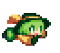

<style>
    .pixel-koish-art {
        image-rendering: pixelated;
        width: 160px;
        height: 160px;

        transform: scale(-1, 1);
    }
</style>

<layout-row class="genric-card" style="width: 100%; height: 200px" padding="24px">
    <layout-column style="width: 70%">
        <span class="section-title" style="color: #3b6ef3">BLOG</span>
        <span class="title-text">所有文章</span>
        <span class="prompt-text">凑企鹅的石头进货地</span>
        <vertical-spacer size="24px"></vertical-spacer>
        <layout-row width="100%">
            <layout-row gap="12px" vertical-alignment="Center">
                <object data="../../assets/icon/envolop.svg" type="image/svg+xml" width="16" height="16"></object>
                <p class="prompt-text">共 2 篇文章</p>
            </layout-row>
            <horizontal-spacer size="32px"></horizontal-spacer>
            <layout-row gap="12px" vertical-alignment="Center">
                <object data="../../assets/icon/calendar.svg" type="image/svg+xml" width="16" height="16"></object>
                <p class="prompt-text">最后更新：2026-05</p>
            </layout-row>
        </layout-row>
    </layout-column>

    <breathe-card strength="32" static="true" random="true">
        <layout-box alignment="Center">
            
        </layout-box>
    </breathe-card>
</layout-row>